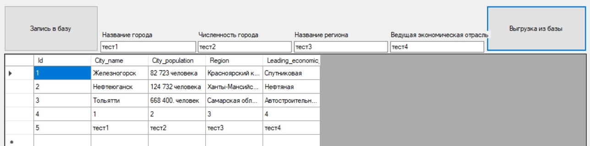
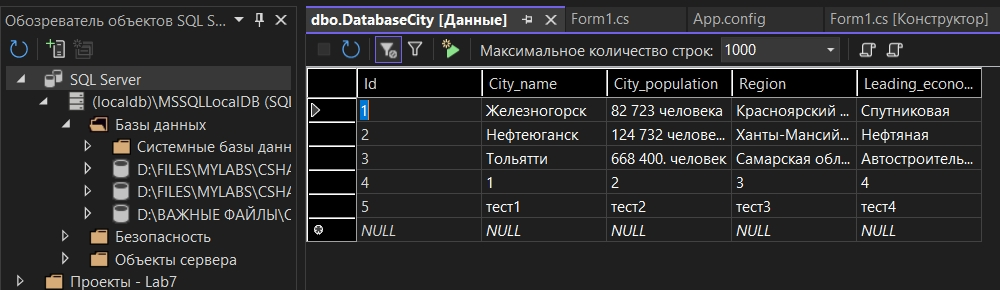

Лабораторная №7
Form.cs
namespace Lab7
{
public partial class Form1 : Form
{
private SqlConnection con = null;
public Form1()
{
InitializeComponent();
}
private void Form1_Load(object sender, EventArgs e)
{
con = new SqlConnection(ConfigurationManager.ConnectionStrings["mydb"].ConnectionString);
con.Open();
if (con.State == ConnectionState.Open)
{
MessageBox.Show("Подключение установлено");
}
}
private void button1_Click(object sender, EventArgs e)
{
SqlCommand command = new SqlCommand($"insert into [DatabaseCity] ([City_name],[City_population],[Region],[Leading_economic_sector]) Values (N'{textBox1.Text}',N'{textBox2.Text}',N'{textBox3.Text}',N'{textBox4.Text}')", con);
MessageBox.Show(command.ExecuteNonQuery().ToString());
}
private void button2_Click(object sender, EventArgs e)
{
SqlDataAdapter adapter = new SqlDataAdapter(
"Select * from [DatabaseCity]", con);
DataSet ds = new DataSet();
adapter.Fill(ds);
dataGridView1.DataSource = ds.Tables[0];
}
}
}
App.config
<?xml version="1.0" encoding="utf-8" ?>
<configuration>
<startup>
<supportedRuntime version="v4.0" sku=".NETFramework,Version=v4.7.2" />
</startup>
<connectionStrings>
<add name="mydb" connectionString="Data Source=(LocalDB)\MSSQLLocalDB;AttachDbFilename=D:\Files\myLabs\Csharp\Lab7\DatabaseCity.mdf;Integrated Security=True" />
</connectionStrings>
</configuration>


На главную